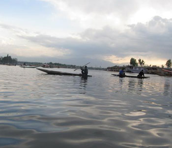

With the Arabian Sea in the west, the Western Ghats towering 500-2700 m in the east and networked by 44 rivers, Kerala enjoys unique geographical features that have made it one of the most sought after tourist destinations in Asia. An equable climate. A long shoreline with serene beaches. Tranquil stretches of emerald backwaters. Lush hill stations and exotic wildlife. Waterfalls. Sprawling plantations and paddy fields. Ayurvedic health holidays

WHAT CAN U WRITE
Sprawling plantations and paddy fields. Ayurvedic health holidays